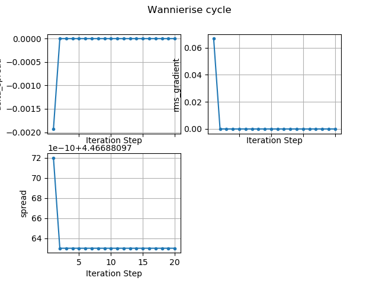
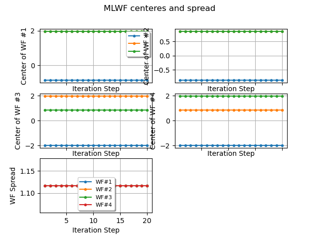

Note
Click here to download the full example code
Wannier90 wout file¶
This example shows how to plot the convergence of the wannierization cycle using the .wout file produced by wannier90. Use abiopen FILE.wout for a command line interface and the –expose option to generate matplotlib figures automatically.
- 
- 
Out:
================================= File Info =================================
Name: example01_gaas.wout
Directory: /Users/gmatteo/git_repos/abipy/abipy/data/refs/wannier90
Size: 31.64 kb
Access Time: Fri Oct 18 18:46:27 2019
Modification Time: Wed Mar 20 16:53:35 2019
Change Time: Wed Mar 20 16:53:35 2019
================================= Structure =================================
Full Formula (Ga1 As1)
Reduced Formula: GaAs
abc : 4.016499 4.016499 4.016499
angles: 60.000000 60.000000 60.000000
Sites (2)
# SP a b c
--- ---- ---- ---- ----
0 Ga 0 0 0
1 As 0.25 0.25 0.25
Wannier90 version: 2.1.0+git
Number of Wannier functions: 4
K-grid: [2 2 2]
================================= WANNIERISE =================================
iter delta_spread rms_gradient spread time O_D O_OD O_TOT
0 4.470000e+00 0.000000e+00 4.468812 0.00 0.00832 0.503629 4.468812
1 -1.930000e-03 6.679013e-02 4.466881 0.00 0.00803 0.501988 4.466881
2 -8.930000e-10 4.544940e-05 4.466881 0.01 0.00803 0.501988 4.466881
3 0.000000e+00 2.000000e-10 4.466881 0.01 0.00803 0.501988 4.466881
4 8.880000e-16 2.000000e-10 4.466881 0.01 0.00803 0.501988 4.466881
16 -8.880000e-16 0.000000e+00 4.466881 0.02 0.00803 0.501988 4.466881
17 8.880000e-16 0.000000e+00 4.466881 0.02 0.00803 0.501988 4.466881
18 0.000000e+00 0.000000e+00 4.466881 0.02 0.00803 0.501988 4.466881
19 8.880000e-16 0.000000e+00 4.466881 0.02 0.00803 0.501988 4.466881
20 0.000000e+00 0.000000e+00 4.466881 0.02 0.00803 0.501988 4.466881
/Users/gmatteo/git_repos/pymatgen/pymatgen/util/plotting.py:550: UserWarning: Matplotlib is currently using agg, which is a non-GUI backend, so cannot show the figure.
plt.show()
import os
import abipy.data as abidata
from abipy.abilab import abiopen
# Open the wout file
filepath = os.path.join(abidata.dirpath, "refs", "wannier90", "example01_gaas.wout")
wout = abiopen(filepath)
print(wout)
# Plot the convergence of the Wannierise cycle.
wout.plot(title="Wannierise cycle")
# Plot the convergence of the Wannier centers and spread
# as function of iteration number
wout.plot_centers_spread(title="MLWF centeres and spread")
Total running time of the script: ( 0 minutes 0.511 seconds)